精英干员档案
招募并指挥各具特色的战术专家，每个干员都拥有独特的技能和专长，在战场上发挥关键作用。
作战人员
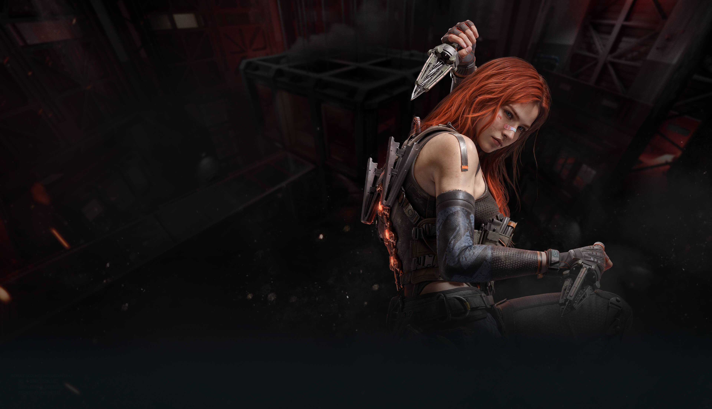
疾风
突击兵
疾风是集高机动移动、缴械突入为一体的突击型干员。她可以在交战中提升自己的移动和翻滚速度，并使用钻墙电钻缴械掩体后的敌人，在战斗时还可以在原地布置锚点，进行闪回和自救，让敌人难以捕捉。
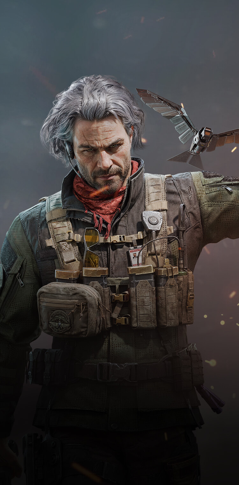
银翼
侦查兵
银翼，侦察兵种，擅长使用电子信息设备，其猎鹰无人机能够有效追踪视野内所有敌人的位置。战术装备为蜂鸟间谍摄像头，可破解敌方踪迹，获取敌方干员、装备和位置信息，拥有优秀的信息作战和情报获取能力
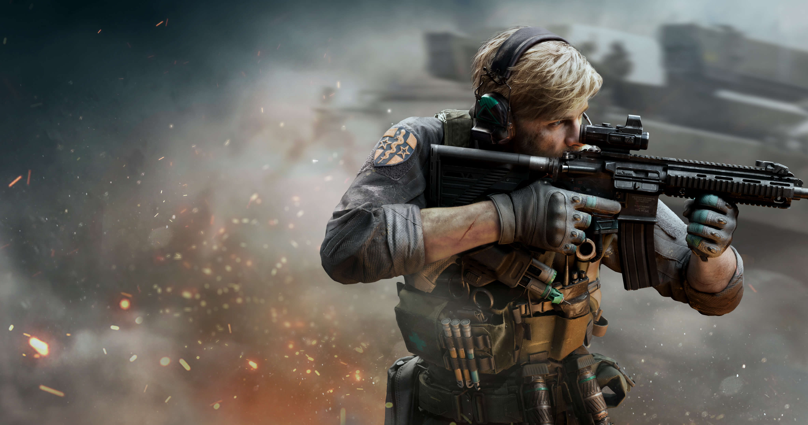
蜂医
支援兵
罗伊·斯米是一名天生的军医，他有着生命至上的信念，专业的医疗支援能力，以及改变自己的决心。
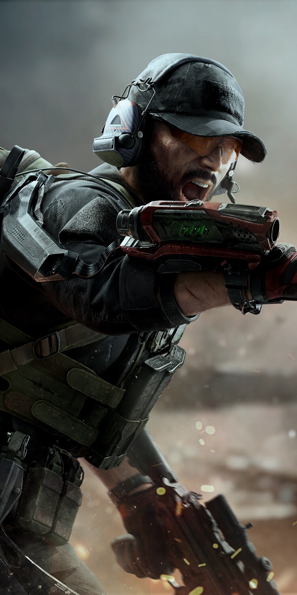
红狼
突击位
凯·席尔瓦少校的作战经验丰富，并且多次执行海外派驻任务。在北非的任务中负伤修养之后，他正式被G.T.I.招募，并且成为G.T.I.研制的单兵外骨骼系统的首个使用者
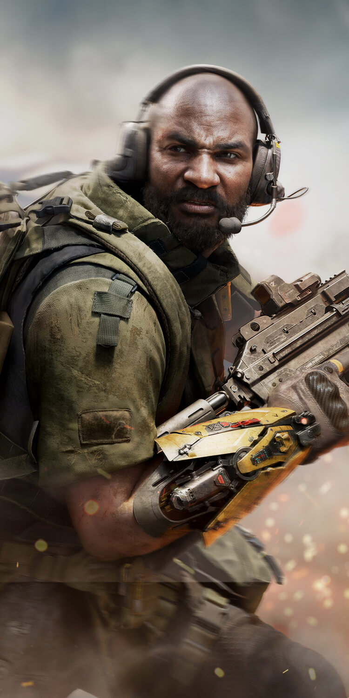
牧羊人
工程兵
泰瑞·缪萨不光是一名工程人员，更是团队的粘合剂。他对于每个队员都有充分的了解，用他自己的话来说“关注你的敌人，但更要关注你的朋友。
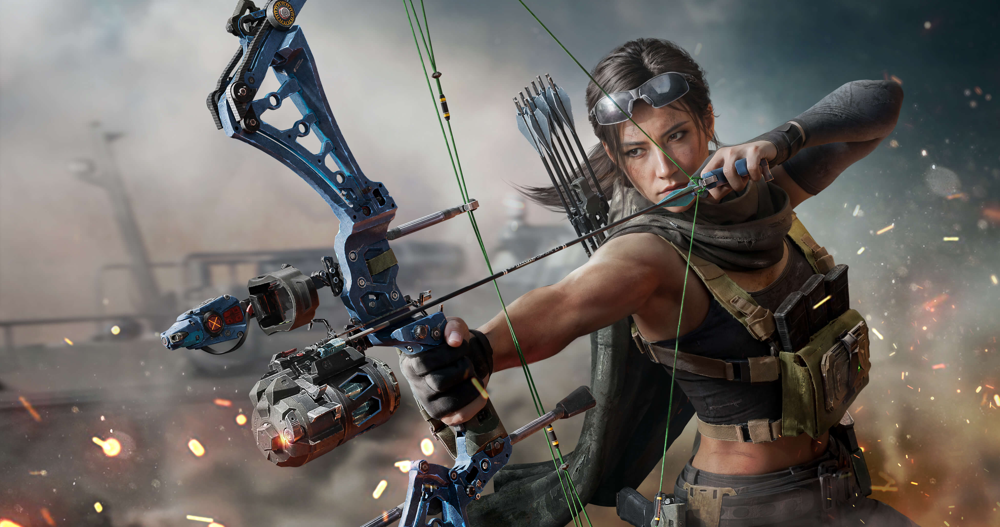
露娜
侦察兵
金卢娜是一名拥有出色侦察能力的特种作战人员。作为前情报官与职业运动员，她在信息收集与分析和箭术的把控方面无人能出其右。
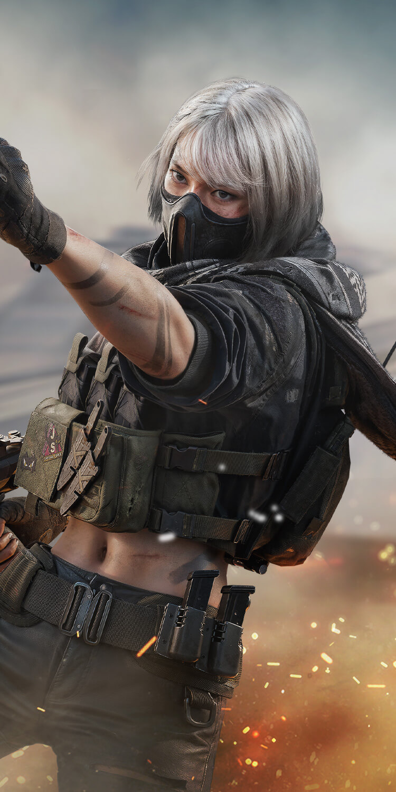
骇爪
侦查兵
作为顶尖的电子攻防专家，麦晓雯被G.T.I.破例特招。她多次申请前往阿萨拉地区执行任务，个中缘由似乎与她的过去息息相关。

蛊
支援兵
佐娅・庞琴科娃出身技术研究领域，可战斗热情丝毫不输作战人员。她生于军人家庭，研究项目都围绕辅助作战展开，承接作战任务也极为积极。佐娅能将现代神经化学与智能无人机作战完美融合，是一名独特且令人生畏的支援干员 。
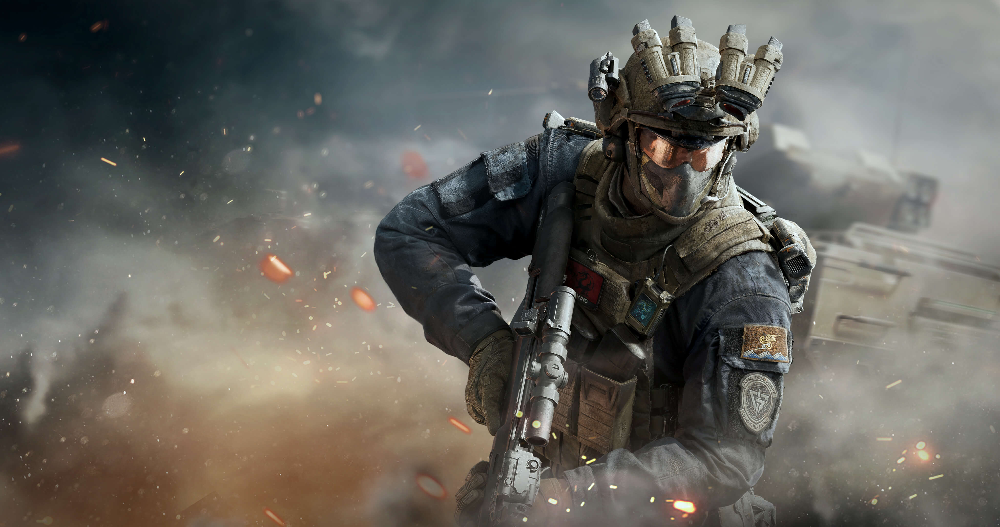
威龙
突击兵
王宇昊曾经所接受的训练与常规作战人员不同，他的身体素质与平衡能力和反应能力都是万里挑一，他的信念感和使命感更是G.T.I.重视他的原因。
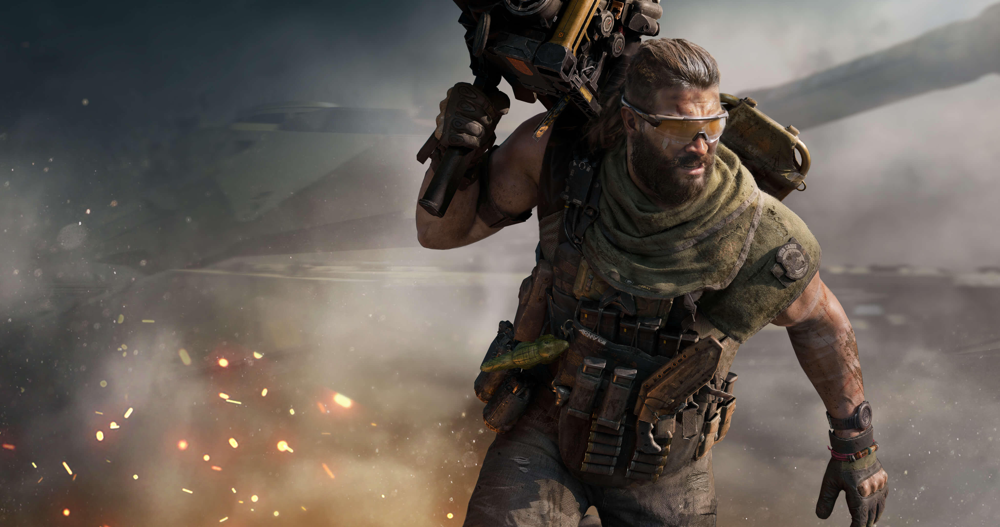
乌鲁鲁
工程兵
大卫·费莱尔在退役后被G.T.I.重新招募。他的作战风格狂放勇猛，但同时也能够保证守护和突进二者并存。
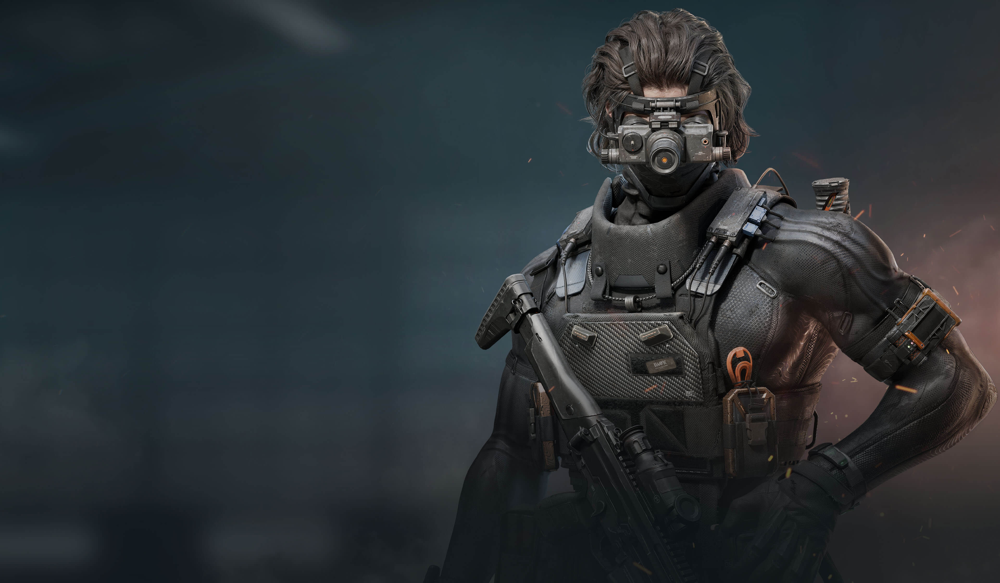
无名
突击兵
无名曾接受过来自哈夫克的军事训练，也有丰富的佣兵经验，擅长信息干扰，精通多种战斗技巧。他是集单兵绕后、追踪伤害、闪光突破为一体的干员，对隐蔽突袭作战造诣极深，能在战场上出其不意地刺入敌方防御空缺。
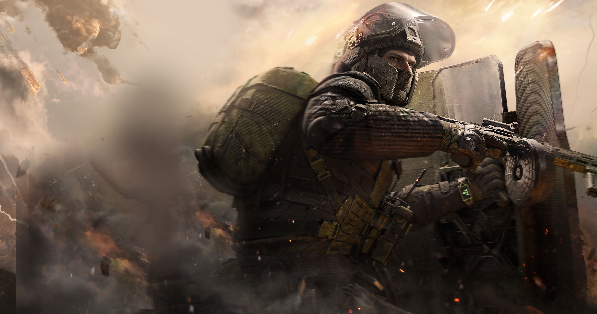
深蓝
工程兵
阿列克谢·彼得罗夫的作战经验非常丰富，并且耐力和力量出众，他的全面防护装备是帮助小队推进的利器。有他加入阿萨拉地区的行动，我方伤亡率会大大降低，因为守护每一个人是他的本能。